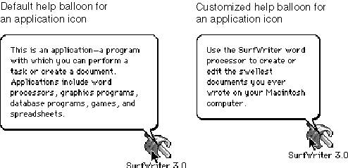

Legacy Document
Important: The information in this document is obsolete and should not be used for new development.
Important: The information in this document is obsolete and should not be used for new development.


Providing Balloon Help for Nondocument Icons
The Finder offers Balloon Help online assistance for users. After the user chooses Show Balloons from the Help menu, descriptive help balloons appear when the user moves the cursor to an area of the screen (such as a menu, a window control, or a dialog box) that has a help resource associated with it.The Finder provides default help balloons for application, control panel, and system extension icons. You can provide a customized help balloon for your application, control panel, or system extension icon by adding an
'hfdr'resource with resource ID -5696 to the resource fork of your application. Figure 7-14 compares the default help balloon with a customized help balloon for the SurfWriter application icon.Figure 7-14 Default and customized help balloons for application icons

Listing 7-12 shows a Finder help override resource and its associated
'STR 'resource, which are used for the customized help balloon shown in Figure 7-14.
The chapter "Help Manager" in Inside Macintosh: More Macintosh Toolbox describes in detail how to provide Balloon Help for your application icon and for other elements of your application.
- Note
- You cannot override the default help balloon that the Finder uses
for document icons.
Listing 7-12 Rez input for a help balloon resource for an application icon
resource 'hfdr' (-5696, purgeable) { /*help for SurfWriter icon*/ HelpMgrVersion, hmDefaultOptions, 0, 0, /*header information*/ {HMSTRResItem {kIconHelpString}} }; resource 'STR ' (kIconHelpString, purgeable) {/*help message for app icon*/ "Use the SurfWriter word processor to create or edit the " "swellest documents you ever wrote on your Macintosh computer." };